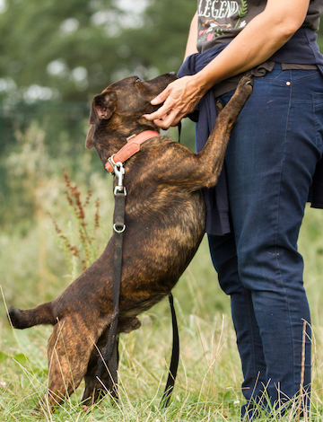

Bienvenidos a Patas
Salva dos vidas,
la del animal que adoptas y la del que puede ocupar su lugar
Bienvenidos a la protectora
¡Ayúdanos a ayudarles! La diferencia entre un perro desamparado y
un perro feliz, eres tú

Adopta üê∂

Acoge üê±
